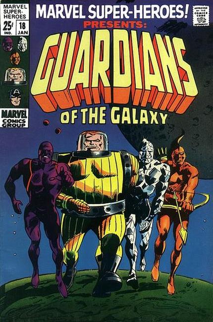
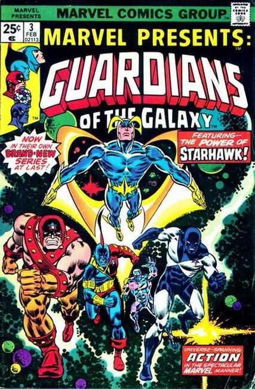

The Guardians of the Galaxy are a fictional spacefaring superhero team appearing in American comic books published by Marvel Comics. Dan Abnett and Andy Lanning formed the team from existing and previously unrelated characters created by a variety of writers and artists, with an initial roster of Star-Lord, Rocket Raccoon, Quasar, Adam Warlock, Gamora, Drax the Destroyer and Groot.
These Guardians first appeared in "Annihilation: Conquest" #6 (April 2008). A feature film based on this team was released in 2014. A sequel, titled Guardians of the Galaxy Vol. 2, was released in 2017.
 
The original team was created by Arnold Drake and Gene Colan in 1969, and first appeared in Marvel Super-Heroes #18, then a new team for Marvel Presents #3 in 1975.
1990 Series: